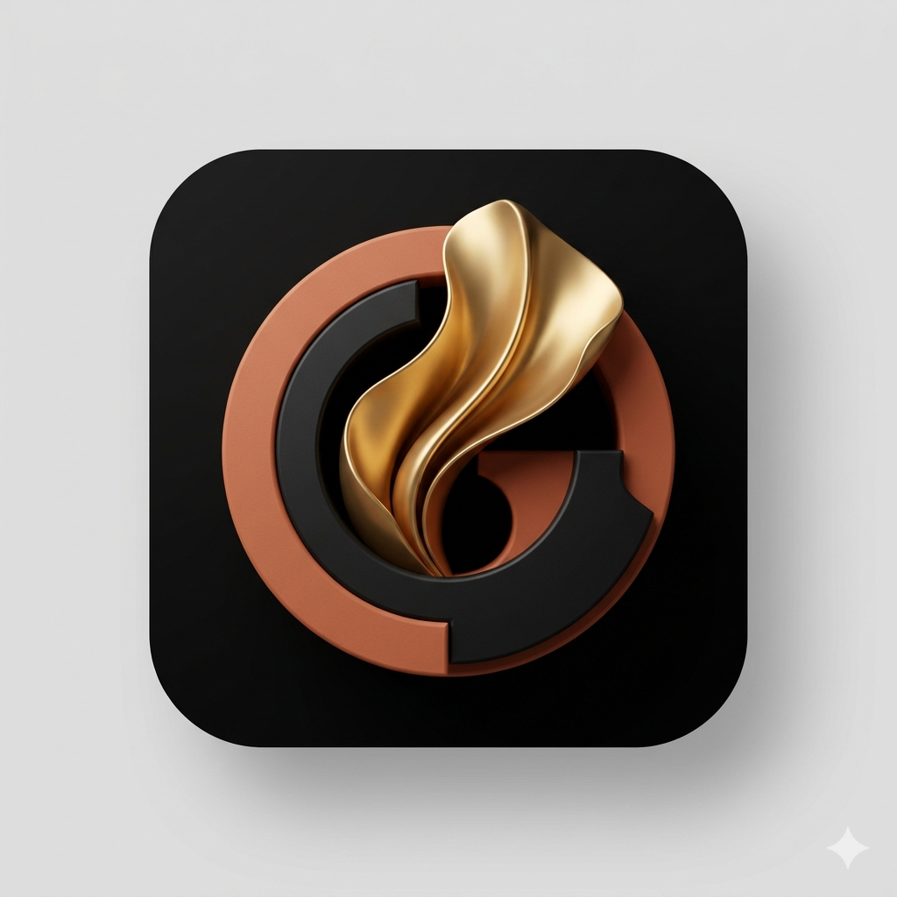

Move from analysis into feeling
Emotions shift when they are expressed, not endlessly analyzed. Emerge helps you leave the loop of thinking and come back to direct experience.

A simple practice to release your emotions.
When emotion hits, the mind often reaches for distraction. Emerge offers another reflex: speak what is true, get out of the thinking mind, and let the feeling move through you.
A private space for emotional release. Minimal, direct, and built for the moment you need it.
Emerge is made for the moment when you feel too full, too tense, too charged, or too caught in your head.
Instead of scrolling away from the feeling, you enter a short voice-based practice that helps you connect to yourself and make emotional space within you.
The experience is inspired by repetition practices such as Meisner: simple, embodied, and focused on what is alive right now.
Emotions shift when they are expressed, not endlessly analyzed. Emerge helps you leave the loop of thinking and come back to direct experience.
No perfect wording, no pressure to make sense, no need to explain yourself. Just a contained space to express what is there and let the pressure soften.
Don't ignore your emotions. Turn toward yourself, say what is there, and let something open.